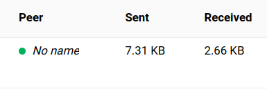

| Ник | Пост | Дата |
|---|---|---|
| yoyey80877(dahW1) | Здравствуйте, вставил Keenetic WAN в LAN основного роутера. Интернет работает. Обновил, стал настраивать на нём конфиг WARP который сгенерировал на одном из сайтов. Сделал по интсрукции для AmneziaWG. Пир зелёный, но коннект идёт напрямую (подключаюсь к WiFi кинетика). Сервисы показывают ip моего ISP. Галочка использовать для интернета стоит. Куда смотреть подскажите?  | 2025-01-08T09:34:49.097Z |
| dartraiden(Alexander Gavrilov) | А вы в политиках подключений же поставили этот WARP выше подключения к провайдеру? Если не поставили, то вот вам и ответ: подключения используются в порядке их приоритета. | 2025-01-08T18:54:59.217Z |
| yoyey80877(dahW1) | Да, спасибо, после того как пост написал, бездумно тыкал по в интерфейс и случайно нашёл и методом тыка починил, забыл отписаться | 2025-01-09T14:59:19.296Z |